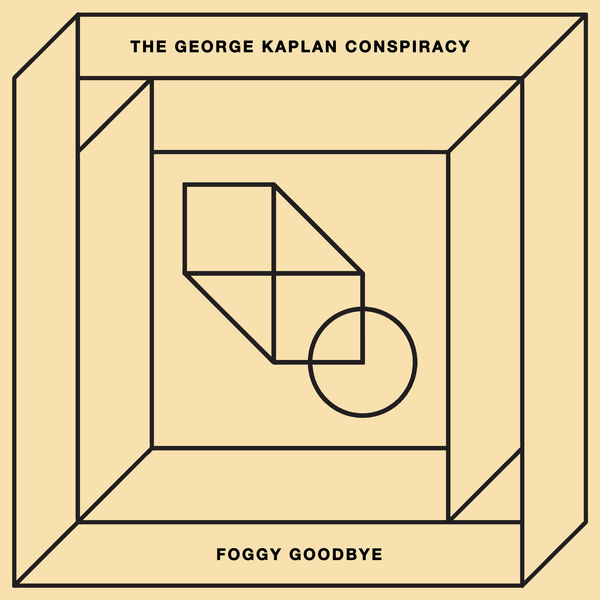

The George Kaplan Conspiracy
The Light Inside

-

Fell That Snow
5:15
-

Tell Me More
4:17
-

Foggy Goodbye
3:06
-
Meeting Place
3:46
The light Inside
The Light Inside, le nouvel EP mélancolique de The George Kaplan Conspiracy, suscite une véritable introspection en évoquant cette guerre intérieure contre nous-mêmes comme dans les titres War et Foggy Goodbye faisant référence à cette capacité que nous avons de ne montrer que le meilleur de nous-même. La déception et la romance sont également des thèmes récurrents dans cet EP à la fois groovy et atmosphérique en ré-empruntant des textures krautrock tout en y incorporant des beats incisif et fédérateurs. Leur musique intemporelle mixant électro rétro-futuriste, new wave et sonorité seventies nous enivre et nous emmène loin dans notre imaginaire.

La pop de The George Kaplan Conspiracy est née il y a trois ans à Dijon. En empruntant le nom du personnage clef de La Mort aux trousses, le groupe fait un clin d’œil à Alfred Hitchcock. Ce n’est pas Cary Grant qui se cache derrière un curieux complot mais bien les synthétiseurs, les guitares, les basses et les voix de Gabriel Afathi, Bastien Francoulon et Valérian Marguery.